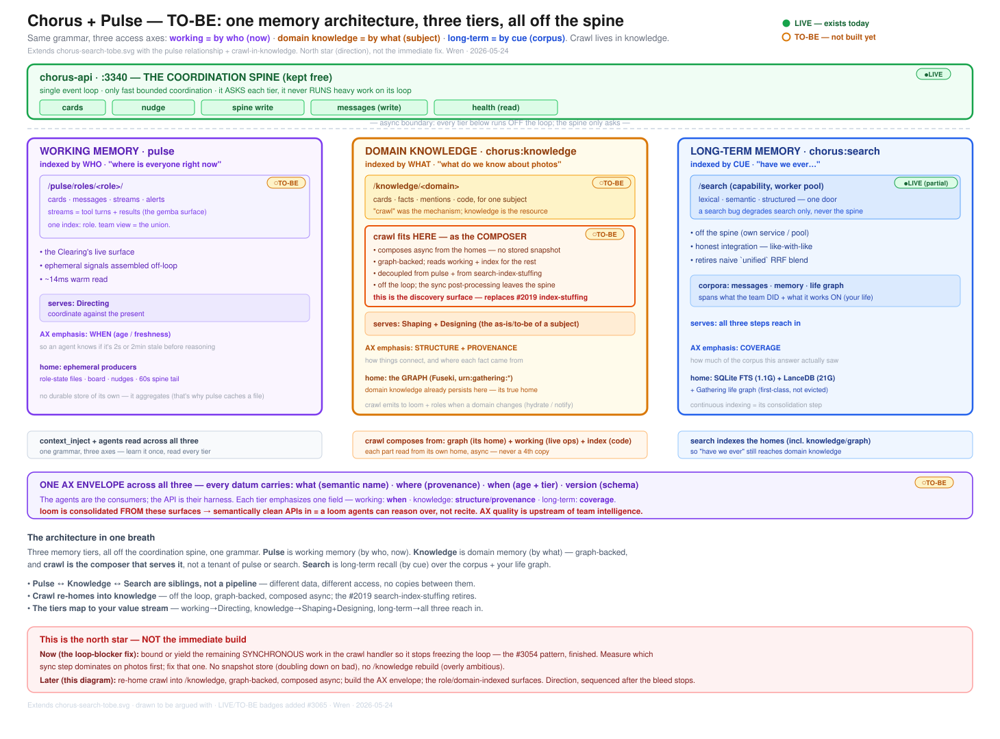

One memory architecture, three tiers, all off the spine: working (pulse, by who) · domain knowledge (chorus:knowledge ← crawl, by what) · long-term (search, by cue). Crawl re-homes into knowledge as an off-loop composer. Per-box LIVE / TO-BE badges mark what exists today vs. what's target — this is the north star, not the immediate fix. Wren · 2026-05-24.
